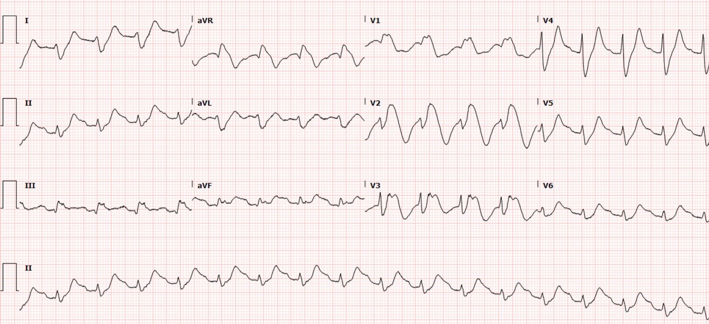
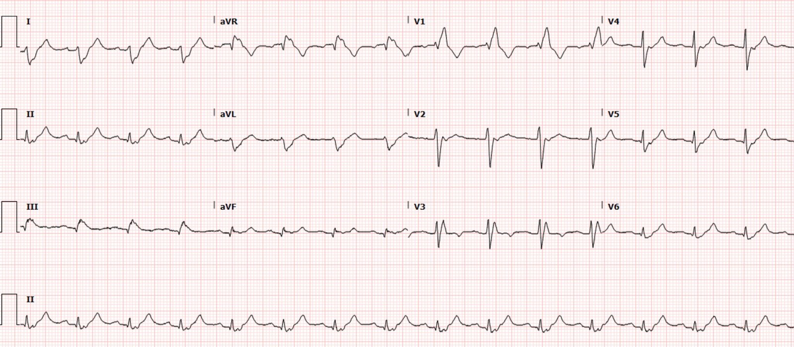
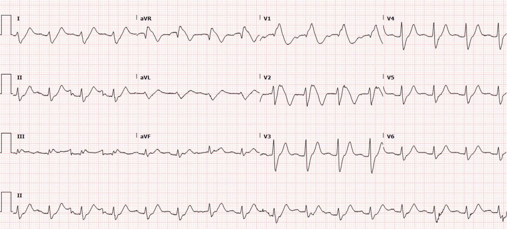
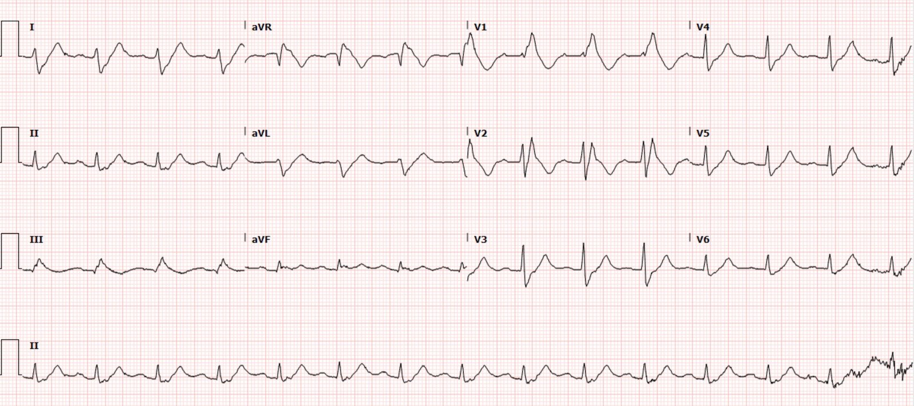
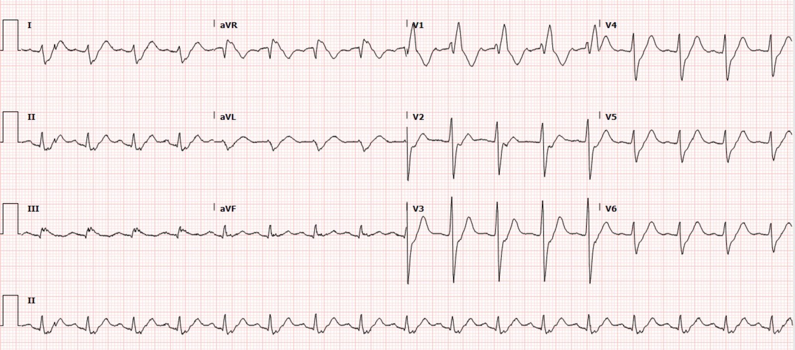
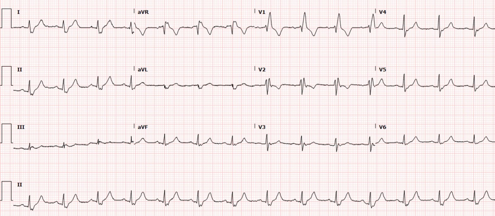
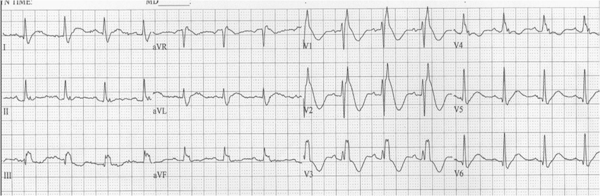
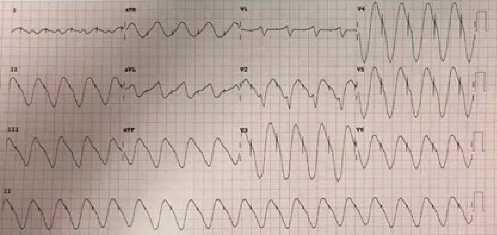
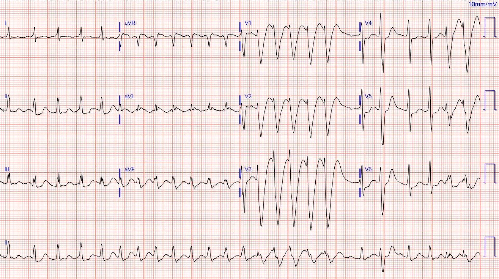

27/08/2021 — QRS rộng và kỳ dị
Bản dịch tiếng Việt của bài "Wide and weird" – Dr. Smith’s ECG Blog. Giữ nguyên toàn bộ 9 hình ảnh của bản gốc.
Tác giả: Clare Gunn MD, bình duyệt bởi Smith, Meyers, Bracey
Một bệnh nhân nữ 74 tuổi đến phòng cấp cứu sau khi vấp ngã (không rõ là ngã cơ học đơn thuần hay do có thể bị loạng choạng) làm rách chân. Do đang dùng thuốc chống đông mạn tính vì rung nhĩ, bà
không thể tự cầm máu nên đã đến khoa cấp cứu (ED). Khi đến viện,
bà được phát hiện giảm oxy máu, cần thở bốn lít oxy qua ống thông mũi.
Trong lúc khâu vết thương ở chân, bệnh nhân cũng được đánh giá tình trạng
giảm oxy máu và nhịp tim nhanh, và ghi được điện tâm đồ này:


Đây là điện tâm đồ cũ gần nhất của bà được lưu trong hồ sơ để so sánh:


Diễn giải điện tâm đồ:
Rối loạn nhịp nhanh đều, QRS rộng, tần số khoảng 100 lần/phút
Hình dạng QRS rất rộng và kỳ dị, rất khó xác định chính xác QRS kết thúc ở đâu, nhưng tôi ước đoán độ rộng QRS khoảng 200 ms. QRS có cấu hình RBBB, với QRS dương lớn ở V1 và sóng S rộng ở V6. Điều này gợi ý rằng RBBB nền đã biết đang bị biến dạng thêm bởi một bệnh lý khác. Thời gian QRS do máy tính đo là 189 ms.
Tương ứng với phức bộ QRS hết sức kỳ dị này là đoạn ST và sóng T cũng kỳ dị tương tự. Ở một số chuyển đạo có hình dạng sóng hình sin (sine wave).
Nhịp không hoàn toàn rõ ràng. Chẩn đoán phân biệt gồm nhịp xoang hoặc nhịp bộ nối gia tốc kèm dẫn truyền lệch hướng rất nặng. Tôi không nghĩ có thể thấy được bất kỳ hoạt động nhĩ chắc chắn nào. Theo định nghĩa, VT không thể có tần số từ 100 lần/phút trở xuống, và chỉ rất hiếm khi chậm tới mức 120 lần/phút.
Tôi đã nhắn điện tâm đồ này cho Dr. Smith mà không kèm thông tin lâm sàng nào và không kèm điện tâm đồ cũ, và ông lập tức nhắn lại: “Tăng kali máu (HyperK), hoặc thuốc chẹn kênh Na như TCA hay Flecainide.”
Nguyên nhân thường gặp nhất của một QRS rộng và kỳ dị đến mức này dĩ nhiên là tăng kali máu. Nhưng nguyên nhân thường gặp thứ hai là ngộ độc thuốc chẹn kênh natri, có thể gặp trong nhiều hội chứng ngộ độc, ví dụ thuốc chống trầm cảm ba vòng, diphenhydramine, và các thuốc được thiết kế có chủ đích để chẹn kênh Na như flecainide, procainamide, v.v. Các bất thường dẫn truyền do tăng kali máu hoặc do ngộ độc thuốc thường gây ST chênh lên (như ở V1-V3 trong ca này) mà máy tính có thể báo là “STEMI.” Cần nhận ra ngay lập tức rằng các đặc điểm kỳ dị của phức bộ QRS, kể cả ST chênh lên (STE), là do một quá trình chuyển hóa chứ không phải OMI, để tránh kết luận chẩn đoán sớm (early diagnostic closure).
Nhận định:
Điện tâm đồ này rất đáng lo ngại tăng kali máu hoặc ngộ độc thuốc chẹn
kênh natri. Vì tần số tim chỉ vừa vượt quá 100 lần/phút, nhịp chính xác trong ca này không quan trọng bằng việc hiểu rằng QRS bị giãn rộng cấp tính do nguyên nhân ngộ độc/chuyển hóa.
Ca bệnh tiếp diễn:
Bác sĩ khoa cấp cứu đã lo ngại một cách thích đáng tới
tăng kali máu trước tiên, và nhanh chóng cho bệnh nhân 2 gam calci gluconat, với
thay đổi rất ít trên điện tâm đồ (ghi chú bên lề của Meyers: 2 gam calci gluconat có thể không đủ lượng calci để thấy QRS hẹp lại rõ ràng trong mọi trường hợp tăng kali máu! Cho thêm cũng không gây hại, và trong một số trường hợp cần nhiều hơn hẳn trước khi chứng minh được đó không phải tăng kali máu). Khi có kết quả xét nghiệm, kali của bà chỉ
5.3 nhưng creatinin mới tăng lên 2.2. Xem lại
hồ sơ bệnh án điện tử (EMR) cho thấy bệnh nhân được kê flecainide để điều trị
rung nhĩ và gần đây vừa được tăng liều đáng kể.
Đã mời hội chẩn chống độc và tim mạch, và xác định bệnh nhân
bị ngộ độc flecainide, nhiều khả năng liên quan đến tổn thương thận cấp và việc tăng
liều. Bà được tiêm vài liều bolus và truyền liên tục natri bicarbonat, nhưng dường như không đáp ứng ngay. Bà được nhập ICU để theo dõi sát.
Ghi chép của ICU mô tả nhịp tim của bà thay đổi đột ngột, vẫn là nhịp nhanh đều QRS rộng nhưng tần số thất tăng lên 140 lần/phút. Họ diễn giải đây nhiều khả năng là nhịp nhanh thất, không ghi điện tâm đồ lúc đó, và quyết định sốc điện chuyển nhịp đồng bộ. Sau lần thử sốc điện chuyển nhịp, họ ghi rằng tần số tim giảm trở lại khoảng 100-110 lần/phút.
QRS của bà hẹp dần trong vài ngày.
Đây là điện tâm đồ của bà khoảng một ngày sau:


Thời gian QRS do máy tính đo = 204 ms (tôi nghĩ thực tế ngắn hơn)
Ngày 2:


Thời gian QRS do máy tính đo = 164 ms (tôi nghĩ thực tế dài hơn một chút)


Thời gian QRS do máy tính đo = 189 ms, nhưng rõ ràng hình dạng đang cải thiện
Cuối cùng bà được chuyển đến cơ sở phục hồi chức năng mà không cần điều trị chống loạn nhịp thêm. Dưới đây là điện tâm đồ của bà một tuần sau:


Những điểm cần học
QRS giãn rộng là kết quả của sự dẫn truyền lệch hướng (aberrancy) vật lý hoặc hóa học (hoặc cả hai) trong lan truyền điện thế hoạt động, so với lan truyền bình thường qua hệ Purkinje bình thường. Dẫn truyền lệch hướng vật lý gồm blốc nhánh, chậm dẫn truyền trong thất không đặc hiệu, bệnh cơ tim, đi tắt hệ dẫn truyền như nhịp tạo nhịp, v.v. Dẫn truyền lệch hướng “hóa học” là tình trạng tốc độ lan truyền điện thế hoạt động chậm hơn, như tăng kali máu hoặc chẹn kênh natri. Mọi phức bộ QRS rộng đều phải có ít nhất một trong các thành phần này để giải thích vì sao nó rộng.
Bất kỳ RBBB nào có thời gian QRS dài hơn 170 ms nhiều khả năng là do có thêm một bệnh lý làm kéo dài QRS:
Is This a Simple Right Bundle Branch Block? (Đây có phải là một blốc nhánh phải đơn thuần?)
Flecainide, thuốc thủ phạm trong ca này, là
thuốc chống loạn nhịp nhóm 1C, tác dụng bằng cách chẹn các kênh natri nhanh đi vào
mở trong pha không khử cực của tế bào cơ tim
và hệ His-Purkinje. Điều này làm khử cực kéo dài và chậm
dẫn truyền. Flecainide cũng tác động lên các kênh kali đi vào, ảnh hưởng đến
thời kỳ trơ của tế bào tim, khiến thuốc rất phù hợp với vai trò
phòng ngừa các rối loạn nhịp nhanh như rung nhĩ và các SVT khác.
Flecainide được thải qua thận, và tổn thương thận cấp hay mạn
có thể làm tăng nồng độ thuốc trong huyết tương. Ngộ độc thường được nhận ra ở
bệnh nhân nhờ điện tâm đồ kỳ dị của họ. Bệnh nhân sẽ có phức bộ QRS rộng,
khoảng PR kéo dài và QT kéo dài. Mục tiêu điều trị ngộ độc flecainide
bao gồm xử trí đường thở, hô hấp và tuần hoàn ở
bệnh nhân nặng, tránh chẹn thêm kênh natri và
phòng ngừa các biến cố loạn nhịp. Dùng natri
bicarbonat sớm và tích cực có thể giúp khắc phục tình trạng chẹn kênh natri, và nhũ dịch lipid đã được
dùng trong các ca quá liều nặng. Hiện tại có vẻ lọc
máu không có vai trò. Khuyến cáo liên hệ sớm trung tâm chống độc hoặc
bác sĩ chống độc đối với các ca nặng.
Có một chẩn đoán phân biệt rộng cho bất kỳ điện tâm đồ nào được đưa cho bạn là
điều quan trọng. Điều trị bệnh nhân này theo giả định tăng kali máu là an toàn và lẽ ra
đã cứu sống bệnh nhân nếu hình dạng kỳ dị ở trên là do
kali máu tăng, nhưng đừng quên kiểm tra danh sách thuốc của bệnh nhân
để tìm các thuốc như Flecainide gây chẹn kênh natri, vì chúng
cũng có thể tạo ra hình dạng QRS lạ ở liều điều trị và đặc biệt là ở
liều gây độc.
Tài liệu tham khảo
Smith A, Gerasimon G. An electrocardiographic series of
flecainide toxicity. Indian Pacing Electrophysiol J. 2019 Mar-Apr;19(2):75-78.
doi: 10.1016/j.ipej.2018.11.012. Xuất bản điện tử (Epub) ngày 28 tháng Mười Một năm 2018. PMID: 30502382; PMCID:
PMC6450827.
Mazer-Amirshahi M, & Nelson L.S. (2019).
Antidysrhythmics. Nelson L.S., & Howland M, & Lewin N.A., &
Smith S.W., & Goldfrank L.R., & Hoffman R.S. (Chủ biên), Goldfrank’s
Toxicologic Emergencies, 11e. McGraw Hill. https://accessemergencymedicine-mhmedical-com.libproxy.lib.unc.edu/content.aspx?bookid=2569§ionid=210273423 (chương Thuốc chống loạn nhịp trên AccessEmergency Medicine)
Joshua M. Newson,
Cynthia D. Santos, Bradford L. Walters, Brett R. Todd (tác giả),
The Case of
Flecainide Toxicity: What to Look for and How to Treat (Ca ngộ độc flecainide: cần tìm gì và điều trị thế nào),
Tạp chí The Journal of
Emergency Medicine, tập 59, số 2, năm 2020, trang e43-e47,
Mã ISSN 0736-4679,
https://doi.org/10.1016/j.jemermed.2020.04.052 (mã DOI của bài báo).
(https://www.sciencedirect.com/science/article/pii/S0736467920303905) (bài báo trên ScienceDirect)
Các ca khác trên blog này:
Ở đây, ngộ độc Flecainide giả OMI thành trước:
Right Bundle Branch Block with New Anterior ST elevation (Blốc nhánh phải kèm ST chênh lên thành trước mới xuất hiện)


Ở đây, ngộ độc Flecainide trên nền nhịp tạo nhịp thất giả tăng kali máu:
Weakness and Dyspnea with a Sine Wave. It’s not what you think! (Yếu cơ và khó thở kèm sóng hình sin. Không phải như bạn nghĩ đâu!)


Cuối cùng, một ca bệnh hấp dẫn về khía cạnh kỳ lạ của “phụ thuộc tần số sử dụng” (use dependence) trong ngộ độc flecainide: tác động của thuốc lên QRS thường phụ thuộc vào tần số tim.
Hãy chú ý QRS rộng ra khi tần số tim tăng lên:

